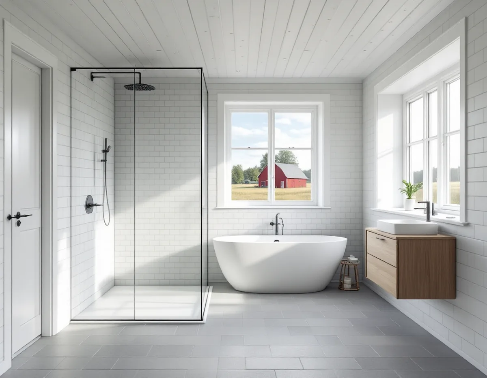
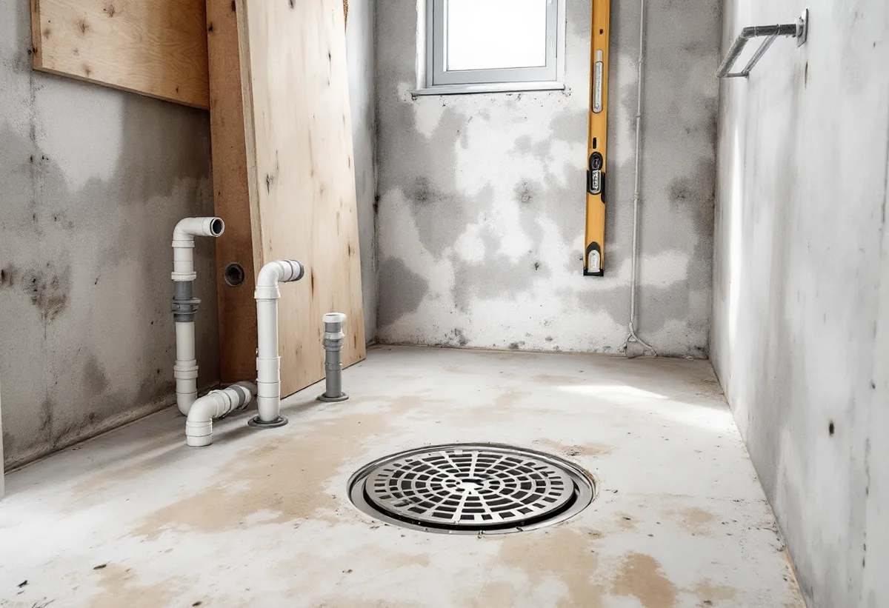

Besök
Vi ser rummet och tar reda på om huset har kommunalt VA eller egen brunn och eget avlopp.
I Vallentuna kan ett nytt badrum betyda en ny dusch i en villa i tätorten eller ett första riktigt våtrum i ett hus på landsbygden med egen brunn och eget avlopp. Geal Entreprenad AB river, bygger tätskikt och ytskikt och samordnar VVS och el, och vi reder ut vad kommunen och Roslagsvatten behöver ha in innan arbetet börjar.

Vallentuna kommun skriver på sidan om att ansluta till kommunalt VA att ny installation eller väsentlig förändring av vatten och avlopp kräver anmälan hos byggnadsnämnden. Du ska ha fått startbesked innan arbetet börjar, och startbeskedet gäller inte bara ledningarna utan också de grävarbeten som behövs.
Anmälan ska innehålla en VA-situationsplan där grävarbetet och de planerade ledningarna och brunnarna ritas in från förbindelsepunkten fram till byggnaden, eventuellt en planritning som redovisar ett nytillkommet våtrum eller kök i en befintlig byggnad, och en kontrollplan. Görs installationen utan startbesked är nämnden enligt lag skyldig att öppna ett tillsynsärende med sikte på sanktionsavgift.
Efter startbeskedet ska en anmälan också göras till Roslagsvatten innan inkoppling eller utbyggnad av förbindelsepunkten kan börja. Roslagsvatten synar fastighetens VA-installation, medger anslutning, installerar vattenmätare och driftsätter anläggningen. Därefter ansöker fastighetsägaren om slutbesked och bifogar den intygade kontrollplanen.

Roslagsvatten AB ansvarar för Vallentunas vatten och avlopp. Dricksvattnet kommer från Görvälnverket i Mälaren, som drivs av kommunalförbundet Norrvatten, och avloppsvattnet renas i Käppala reningsverk på Lidingö. Karby och Brottby är anslutna till Margretelunds reningsverk i Österåker, och Ekskogen och Kårsta har egna mindre reningsverk. Vissa delar av kommunen är inte anslutna alls, och där har hushållen egen brunn och enskilt avlopp.
Ventilationen har egna regler. Vill du göra en väsentlig ändring av ventilationen kan det krävas anmälan, och kommunen påpekar att ändringar ibland påverkar brandskyddet så mycket att anmälan krävs även av det skälet. Till en anmälan hör situationsplan i skala 1:500, planritningar i skala 1:100, teknisk beskrivning och kontrollplan.
I Vallentuna finns ungefär 2 800 enskilda avloppsanläggningar, och ett standardhushåll använder enligt kommunen cirka 800–1 000 liter vatten om dagen som måste tas omhand. Ska en ny anläggning byggas eller en befintlig ändras krävs ansökan om tillstånd eller anmälan till Bygg- och miljötillsynsnämnden, och den som bygger utan riskerar miljösanktionsavgift.
En komplett ansökan består av blankett, situationsplan och sektionsritning. På situationsplanen ska bland annat de hus som ska kopplas på, platsen för slamtömningsbilen, den egna och grannarnas dricksvattentäkt med avstånd i meter och eventuella borrhål för bergvärme finnas med. Är ansökan komplett får du enligt kommunen svar inom sex veckor, men kompletteringar och grannyttranden kan behövas.
Kommunen har tillsyn över enskilda avlopp med fokus på cirka 200 fastigheter om året och ett intervall på tio år, och WC-avlopp prioriteras. Äldre anläggningar kräver ofta åtgärder för att klara dagens reningskrav. Har huset ett minireningsverk kan tillståndet innehålla villkor om service och provtagning, och tillståndsbeslutet kan miljöavdelningen hjälpa till att hitta.
För dig med egen brunn rekommenderar miljöavdelningen mikrobiologisk och kemisk analys, radon om brunnen är borrad och gärna tungmetaller som bly, arsenik och uran. Resultaten har enligt kommunen betydelse för om desinfektion eller filter behöver installeras. Ska ett filter monteras är det bra att veta det innan våtrum och tvättstuga byggs, så att det finns plats och åtkomst.
De senaste årens torka har enligt kommunen gett många brunnsägare vattenbrist och ibland sämre vattenkvalitet, och kommunen uppmanar därför till registrering i SGU:s brunnsarkiv. En grävd brunn har enligt kommunen ofta lägre kapacitet och är känsligare för föroreningar från omgivningen.
Om husens tak och fasader i kommunen finns mer under takrenovering i Vallentuna och målare i Vallentuna.
Vi ser rummet och tar reda på om huset har kommunalt VA eller egen brunn och eget avlopp.
Behövs anmälan till bygglovsenheten eller tillstånd för avloppet tar vi fram underlag.
Arbete och material står på egna rader, så att ROT-avdraget går att räkna ut.
Ytskikt, gamla skivor och brunn tas bort, och underlaget bedöms med rummet öppet.
Installatörerna drar rör och el, tätskiktet läggs och Roslagsvatten synar vid nyanslutning.
Kakel, klinker och porslin monteras, och kontrollplanen intygas inför slutbesked.
Avdraget är 30 procent av arbetskostnaden, högst 50 000 kr per person och år och högst 75 000 kr ihop med rutavdrag. Material och resor räknas inte.
Skatteverket godkänner radonsanering i samband med byggarbete på ett småhus, men inte att mäta radon eller fukt. Vid borrning av en ny brunn räknas arbetskostnaden med en schablon på 35 procent av totalkostnaden, och maskiner som borraggregat ger inget avdrag. Geal drar avdraget direkt på fakturan.
Om badrummet ligger kvar eller blir ett nytt våtrum, om huset ska anslutas eller har eget avlopp, hur ledningarna ska dras och vilka ytskikt du väljer. Vi kommer ut gratis och lämnar ett skriftligt kostnadsförslag.
Tätskikt, golvbrunn, el, VVS och intyg.
Badrumsrenovering i Stockholm →Takbyte, takbesiktning och plåtarbeten.
Takläggare i Vallentuna →Villaområden och gårdar.
Takrenovering i Vallentuna →Inom eller utanför plan, avlopp och brunn.
Attefallshus i Vallentuna →Ritningar, grannar och kommunens mark.
Byggföretag i Vallentuna →Villor och grupphus från 1970-talet och framåt.
Fasadmålning i Vallentuna →Fritidshus, stationssamhällen och villor i Vallentuna.
Fasadrenovering i Vallentuna →Flygbuller, glasval och lov i Vallentuna.
Fönsterbyte i Vallentuna →Fönster i tegelvillan, fog och bågar.
Fönsterrenovering i Vallentuna →Golv på platta och golvvärme i villan.
Golvläggare i Vallentuna →Slipa och laga gamla golvplank.
Golvslipning i Vallentuna →Utbyggda kök, villor och gårdar.
Köksrenovering i Vallentuna →Gårdar, fritidshus och villor i Vallentuna.
Målare i Vallentuna →Rännor, plåttak och uthus i Vallentuna.
Plåtslagare i Vallentuna →Uthus, uterum och fritidshus.
Snickare i Vallentuna →Lovfrågan, skorstenen och arkivet.
Takbyte i Vallentuna →Ritningar, nivåer och arkivet.
Tillbyggnad i Vallentuna →